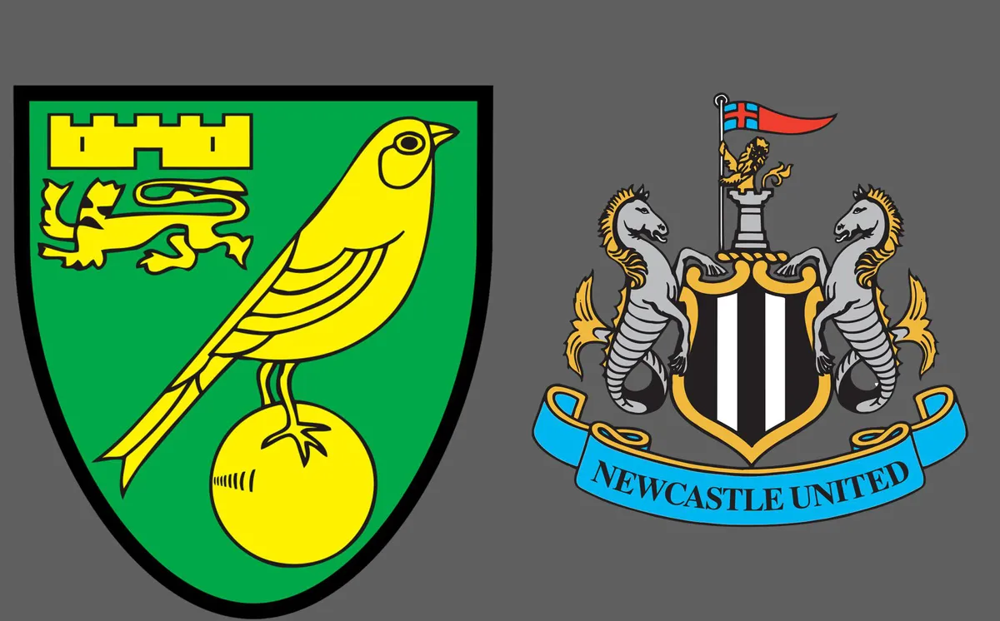

23 de abril de 2022 13:05
LA NACION
23 de abril de 2022 13:05
LA NACION
Imagen del partidoNewcastle venció por 3-0 a Norwich como visitante, en un partido de la jornada 34 de la Premier League. Para Newcastle los goles fueron marcados por Joelinton Cássio Apolinário de Lira (a los 35, 41 minutos) y Bruno Guimarães Rodriguez Moura (a los 49 minutos).
En la próxima fecha, Norwich se medirá con Aston Villa, mientras que Newcastle tendrá como rival a Liverpool.
En los siguientes gráficos se pueden observar las formaciones de los equipos, los cambios, las principales incidencias del partido y la tabla de posiciones.
Los cuatro primeros del certamen accederán a la Champions League; el quinto clasificará a la Europa League y el sexto, a los play off de la novedosa Europa Conference League. Por su parte, los últimos tres equipos descenderán a la Championship.
Manchester City es el último campeón de la Premier League. El ranking de conquistas es liderado por Manchester United, con 20 títulos, y lo siguen Liverpool, con 19; Arsenal, con 13; Everton, con 9, y Aston Villa con 7, el número al que también llegaron los Cityzens con el último trofeo.